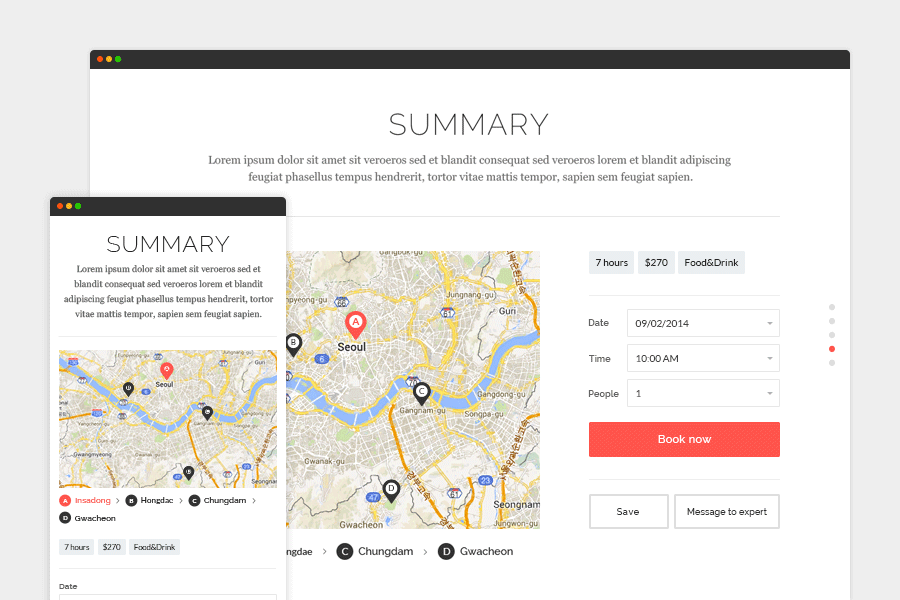

Traveling Owl 트래블링 아울
트래블링 아울은 여행을 좋아하는 외국인들이 한국에 대한 정보를 더 쉽고 간편하게 접근할 수 있도록 돕는 서비스입니다. 사용자들이 직접 찍은 아름다운 사진과 리뷰를 한눈에 볼 수 있도록 레이아웃 스타일을 강화한 정보를 제공하며, 마크업 및 서버, 스케쥴, Google Map, 페이팔 결제 모듈을 포함한 전체 개발을 진행하였습니다.

트래블링 아울은 여행을 좋아하는 외국인들이 한국에 대한 정보를 더 쉽고 간편하게 접근할 수 있도록 돕는 서비스입니다. 사용자들이 직접 찍은 아름다운 사진과 리뷰를 한눈에 볼 수 있도록 레이아웃 스타일을 강화한 정보를 제공하며, 마크업 및 서버, 스케쥴, Google Map, 페이팔 결제 모듈을 포함한 전체 개발을 진행하였습니다.


2014.10~2014.12
외국인을 위한 한국 관광 서비스 플랫폼(외국인을 위한 마이리얼트립)
프론트 엔드(50%) + 백엔드 (100%)
프론트 엔드 : HTML/CSS/Bootstrap/Javascript/
백엔드 : python + django + mysql
각각의 사진 이미지들은 사용자 화면 사이즈에 최적화 되도록 이미지 자동 조정 스크립트를 작성
결제시스템(paypal) 연동 및 googlemap api를 이용한 지도 서비스 구현
스케쥴 서비스 구현
우리나라를 여행한 외국인들의 직접 찍은 사진과 리뷰를 자동적으로 배치하는 레이아웃 시스템을 구축하여, 세련된 매거진처럼 보이는 시각적 아름다움을 극대화했습니다.
이미지 사이즈에 따른 정보의 왜곡을 줄이고자 반응형 웹 기술과 함께 이미지의 중앙에 포커스가 맞도록 로직을 구성하였습니다. 또한 paypal 연동을 통한 간편 결제 시스템을 구축해 예약 및 결제가 편리하게 이루어집니다.
유저가 직관적으로 어떤 기능과 역할을 하는지 쉽게 인지할 수 있도록 메타포 그리드를 이용한 웹사이트를 구축했습니다. 히어로와 본문 사이에 카테고리 바를 추가하여 쉬운 검색을 도왔습니다.